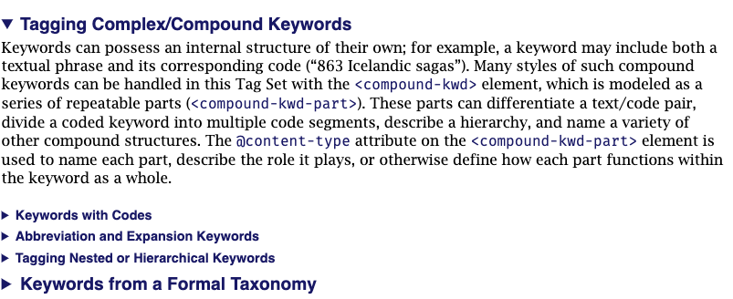
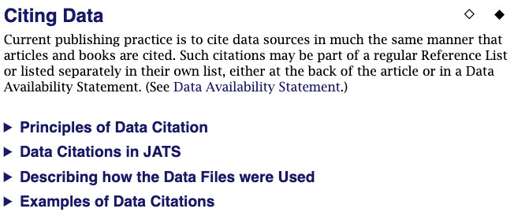

The Tag Library has numerous short essays on how to tag various structures and use various attributes, mostly aimed at the experienced user, but suitable for the casual user. These essays are the closest JATS comes to tutorial material in the Tag Library, and, if the were read, they would probably prove helpful.
JATS is a descriptive not a prescriptive tag set, so the Tag Library does not include long essays on best practice or any Best Practice Recommendations. That type of guidance is provided by outside groups such as JATS4R [JATS4R]. The “Common Tagging Practice” section describes ways (sometimes many alternatives) that JATS might be used to tag documents and information on JATS and accessibility.
Figure 36. Subjects covered in Common Tagging Practice
Keywords are words and phrases used to name an article’s or section’s key concepts for search and retrieval purposes. Typically an author, publisher, or indexing service will assign a small number of key terms to expand lookup beyond full text, to point up the most important topics described in an article, or to map an article to a taxonomy.
JATS can describe simple keywords, compound keywords (code and text, abbreviations and expansions, etc.), nested keywords, and more. This essay describes how to tag them all, with samples for each type.
The last section of Tagging Keywords describes how to use the vocabulary attributes to encode that a keyword or group of keywords contains terms from a thesaurus (ontology, taxonomy, term-list, vocabulary, industry glossary, thesaurus, or other known term source), providing additional semantics for the term.
Figure 37. Selections from Tagging Keywords essay
|  |
A lot of real estate has been spent on the many different kinds of bibliographic references and how they might be tagged. Tagging References includes short essays on different types of references, such as journal article references, data citations, and citations to conferences, as well as extensive examples.
Figure 38. Essays included in Tagging References
Current publishing practice is to cite data sources in much the same manner that articles and books are cited. Such citations may be part of a regular Reference List or listed separately in their own list, either at the back of the article or inside a Data Availability Statement. One of the reference sections discusses data citations.
Figure 39. Citing Data section overview
|  |